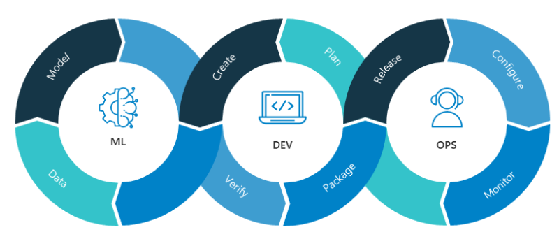
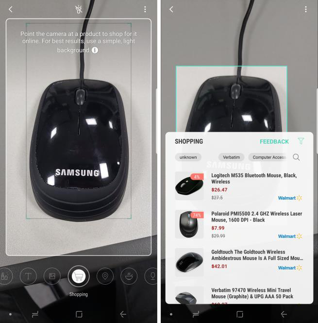

Industry
Portrait Video
Samsung Electronics (MX), Visual AI Group · Jan 2019 – Feb 2025
A real-time AI video bokeh system supporting humans, pets, and objects across single, dual, and ToF camera configurations. I led the end-to-end development and commercialization, deploying across Galaxy product lines from the Galaxy S10 5G to the Galaxy S25. Developed core modules including detection, depth estimation, segmentation, tracking, and visual effects (Blur, Big Circle, Color point, and Glitch).

On-Device MLOps Platform
Samsung Electronics (MX), Visual AI Group · Apr 2024 – Feb 2025
An MLOps system that automates on-device model evaluation across the constantly changing device development environment. During development, not only do AI model versions update, but the Android OS, firmware, frameworks, and camera modules all change in parallel; the system adapts to every one of those moving parts automatically, so each new model release is deployed to real devices and benchmarked with results reported, without manual work. I planned, designed, and developed the system alone, building it across both Windows and Ubuntu within Samsung's strict internal security environment.

Bixby Vision
Samsung Electronics (MX), Visual S/W R&D Group · Aug 2017 – Dec 2018
An AI-based visual search system. I managed and scaled production systems for the Shopping, OCR, and Landmark services, deployed across Galaxy product lines from the Galaxy S8 to the Galaxy Note 10, and established user-feedback-driven evaluation pipelines and survey frameworks for systematic preference analysis. The shopping search research was released as the One-Shot Item Search preprint.
SimSimE (Automated Firmware Release System)
Samsung Electronics (MX), SE Team · Jul 2016 – Aug 2017
A program to automate version releases, covering version release management, firmware management, and Perforce-based version control workflows. I owned the full lifecycle from design through development, automating the firmware release pipeline and reducing the required manpower from about 30 engineers to 3. Developed with C++, C#, WPF, and Selenium.
Outsourced Development
-
Coachtroop
An Airbnb-style coach (tour bus) rental platform for the UK, connecting bus rental companies with travel agencies and travelers. I developed the user account and management system, collaborating with a UK-based designer.
Java · Spring · MySQL · jQuery · Bootstrap
-
Global Aptitude Test System
An Android tablet app for a personnel management system, requested by Samsung SDS and built by a three-member team.
Java · Android
-
SmartVoca
An Android app that helps students learn English vocabulary. I built the backend server and the administrator website for teachers, covering student account management and per-student learning statistics.
C# · ASP.NET Web API · MS-SQL
-
Quest
A web-based program that lets engineers manage their tasks in a waterfall process. I developed both the client and the server.
Java · Spring · MySQL
-
369 Flower
A flower shopping mall service. I extended features and helped with maintenance as an outsourced engineer.
ASP · MS-SQL
-
Bean-box
A web platform that helps coffee lovers, such as baristas and home roasters, get information about coffee. I was the first developer of the project.
C# · ASP.NET · MS-SQL · Microsoft Azure
Competitions
-
WAU
An emergency reporting service for violent crimes, spanning a Windows Phone app, a PC app, and custom Arduino hardware with an Azure backend.
C# · XAML · C++ · Arduino · Azure · MS-SQL
-
Sullivan
A Windows tablet app that helps visually impaired students learn from visual materials: teachers author digital teaching aids with a creator tool, and students explore them through a viewer that combines voice guidance with vibration feedback from custom Arduino hardware. I was the team leader, in charge of project planning and development.
C# · XAML · C · Arduino
-
Excellizer
An Excel plugin that converts web page data into spreadsheet tables. Unlike existing tools that only detect <table> tags, its tablelizing engine recognizes table-like structures across all tags by examining depth and layout, and a built-in web viewer lets users parse only the region they select. I built the whole project myself.
C# · VSTO · WinForm · Office API
Service Development
-
Expandable
A virtual desktop utility for Windows 7/8 that expands the desktop into multiple workspaces, with a map overview of running windows and fast task switchers. I designed the object-oriented architecture and developed the DWM Aero Peek customization, API hooking, and switcher functions.
C++ · Win32 API · MFC · AHK Script
-
Keep On Going
An Android app that helps civil-service exam candidates form and run study groups, with group chat, quizzes, and study timers. I was the team leader and built the RESTful server and the Android app, including an asynchronous socket-based chat server with thread, selector, and buffer pooling.
Java · Android · MySQL · TCP/IP Sockets